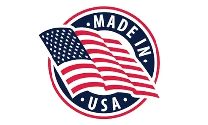

Why Mind Vault
Why People Choose Mind Vault

Made In The USA
Produced in the United States under standard manufacturing practices.
FDA-Registered Facility
Mind Vault is produced in an FDA-registered facility.
GMP Manufacturing
Manufactured under Good Manufacturing Practice guidelines for consistent quality.
100% Natural Formula
Made with natural, plant-based ingredients — no unnecessary fillers.